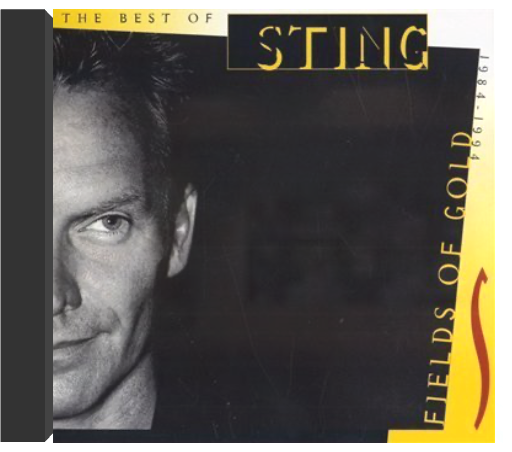
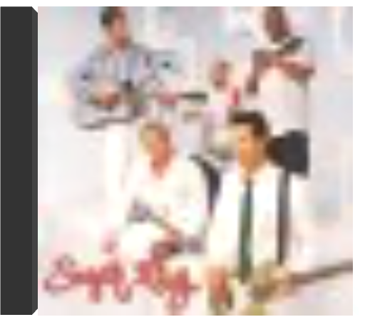

fields of goldsting  Fields Of Gold The Best Of 1984-1994 est un remarquable survol des plus grands succès de Sting. L'album contient également trois inédits dont "This Cowboy Song" et "When We Dance" ; la version de "We'll Be Togethe", quant à elle, a été retravaillé. Malgré l'absence de "Fortress Around Your Heart" et "Be Still My Beating Heart", les fans de l'ancien leader de Police retrouveront, entre autres, "Why Should I Cry for You", "Mad About You", "Love Is the Seventh Wave", "Englishman In New York" et "Russians". —Gavin McNett sugar raysugar ray De toutes les formations qui, à la suite des Rage Against The Machine et autres Suicidal Tendencies, mélangeaient, à l'aube des années 90, le plus furieux du métal avec le plus dévastateur du hip-hop d'alors, l'histoire retiendra sans doute Sugar Ray qui signe une fois de plus un album éponyme clair, précis et bruyant.  in the pursuit of leisuresugar ray in the pursuit of leisuresugar ray Bien qu'il ne soit pas le meilleur opus du groupe Sugar Ray, In The Pursuit Of Leisure n'est pas négligeable pour autant. Sinon un virage, il marque une évolution pour le moins surprenante dans la carrière de la formation, à moins qu'un léger manque d'inspiration n'ait parasité sa réalisation. Que le fan se rassure : on retrouve là, parfaitement digérées, les principales influences de Mark McGrath, qui signe des chansons pop non dénuées d'humour. On s'interrogera juste sur la nécessité de certains morceaux, comme celui curieusement enregistré en compagnie de Shaggy. Si l'acquisition est probablement nécessaire pour les amateurs du groupe, les autres devraient commencer par les albums antérieurs. —Hervé Comte  music for cougarssugar ray music for cougarssugar ray 2009 release from the American Alt-Rock band, their first studio set after a six year hiatus. The best part about the album-by far-is the title. It's called Music For Cougars. It's a hilarious title from a band that left the scene in 2003 when they realized that they weren't selling many records or getting much airplay. It was at that point that Mark McGrath reinvented himself as a host and landed one of the main spots on Extra. After a fun run on the show, McGrath decided it was time to go back to his roots and reunite with the band.  build bridgessure fire soul ensemble build bridgessure fire soul ensemble Build Bridges combines stellar musicianship with unlimited drive and lag proof swing-ability. You can hear the maturity of their sound, which inadvertently allows you to appreciate their previous recordings even more. They're all in the same ballpark yet seem to be on a completely different playing field. Tim Felten's lineup not only shows his keen ability to pick top choice artists, but also shows his sense of direction and investment to high quality musicians. The Sure Fire Soul Ensemble is a staple of the west cost soul/jazz/funk scene and with their third LP, they solidify their position. Heavy grooves and drums, with top tier musicianship and writing. Build Bridges is just as sophisticated as it is soulful and funky! |


 Made with Delicious Library
Made with Delicious LibraryNancy, State zipflap congrotus delicious library Thomas, Julien